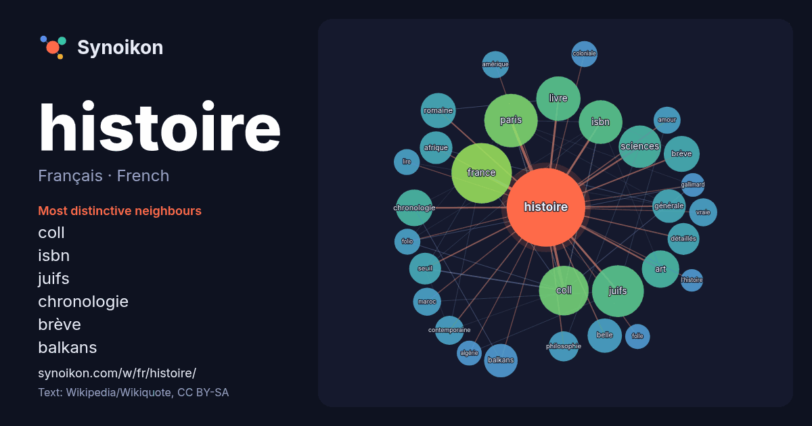

Français · French · popular word
histoire
“history” · The words found around it in 1418 instances from French Wikipedia, Wikiquote.

Most distinctive neighbours
- coll 44×
- isbn 35×
- juifs 30×
- chronologie 23×
- brève 22×
- balkans 20×
- romaine 17×
- détaillés 17×
- seuil 17×
- sciences 16×
- belle 16×
- afrique 14×
- vraie 14×
- contemporaine 13×
- livre 13×
- art 13×
- folio 13×
- amour 12×
- philosophie 12×
- paris 12×
× = how many times more often than in general French Wikipedia text.
Most frequent neighbours
- france 65
- paris 51
- juifs 48
- coll 44
- livre 35
- isbn 34
- sciences 32
- française 30
- art 25
- chronologie 24
- brève 23
- ligne 23
- monde 23
- terre 23
- romaine 22
- belle 21
- français 21
- nouvelle 21
- balkans 20
- générale 20
In context
- articles homonymes, voir Histoire (homonymie). Cet article concerne la discipline scientifique. Pour l'histoire du monde, voir Histoire de l'humanité. Ne doit Wikipedia snippets · Histoire
- Pour les articles homonymes, voir Histoire (homonymie) et Enquête. L'Enquête Histoires L'Enquête ou les Histoires (en grec ancien : Ἱστορίαι / Historíai) Wikipedia snippets · Histoires
- située dans le département du Val-de-Marne, en région Île-de-France. Son histoire est notamment marquée par le développement du chemin de fer, qui contribue Wikipedia snippets · Villeneuve-Saint-Georges
- conventions filmographiques. Notre histoire Pour plus de détails, voir Fiche technique et Distribution. Notre histoire est un film français réalisé par Wikipedia snippets · Notre histoire
- chinois Histoire des sciences et techniques en Chine Shen Kuo Zhang Heng Joseph-Anne-Marie de Moyria de Maillat (1669-1748) Art chinois Histoire de la pensée Wikipedia snippets · Histoire de la Chine
- de l'informatique Histoire de l'intelligence artificielle Histoire des ordinateurs Histoire des langages de programmation Histoire de l'informatique de Wikipedia snippets · Histoire de l'informatique
- 2013) Histoire populaire du Québec, t. 3, de 1841 à 1896, 1996 Jacques Lacoursière, Histoire du Québec, Nouveau Monde, 2005. Revue d'histoire de l'Amérique Wikipedia snippets · Histoire du Québec
- Abrégé d'histoire des mathématiques, Vuibert, Paris, 2002. Jean C. Baudet, Histoire des mathématiques, Vuibert, Paris, 2014. Jean-Paul Colette, Histoire des Wikipedia snippets · Histoire des mathématiques
More French words
- art
- automne
- carte
- chanson
- chat
- chemin
- cheval
- chien
- climat
- cloche
- cœur
- dieu
- désert
- eau
- famille
- forêt
- hiver
- horloge
- jardin
- langue
- miel
- miroir
- monnaie
- montagne
- mort
- mère
- nature
- nourriture
- ombre
- pain
- pluie
- pont
- pouvoir
- printemps
- santé
- science
- sel
- silence
- temps
- tempête
- thé
- train
- travail
- trésor
- vie
- ville
- vérité
- étoile
- île
Precomputed on 2026-10-09 with default settings (±5 words, medium corpus). The interactive map can refresh it with live data.